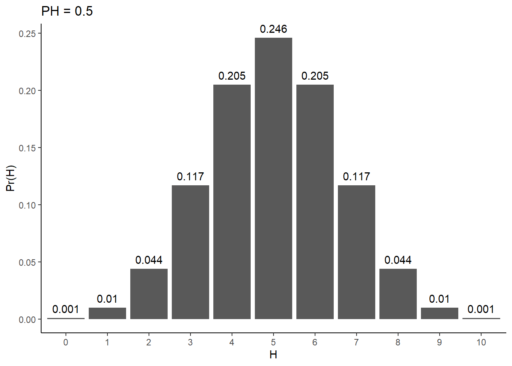
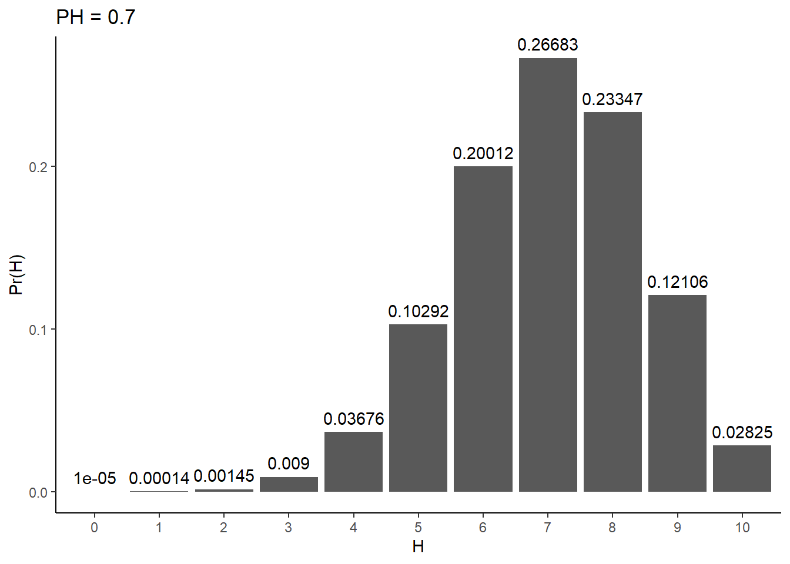
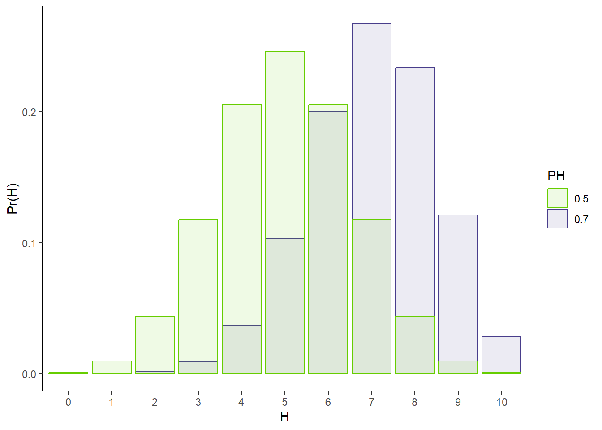
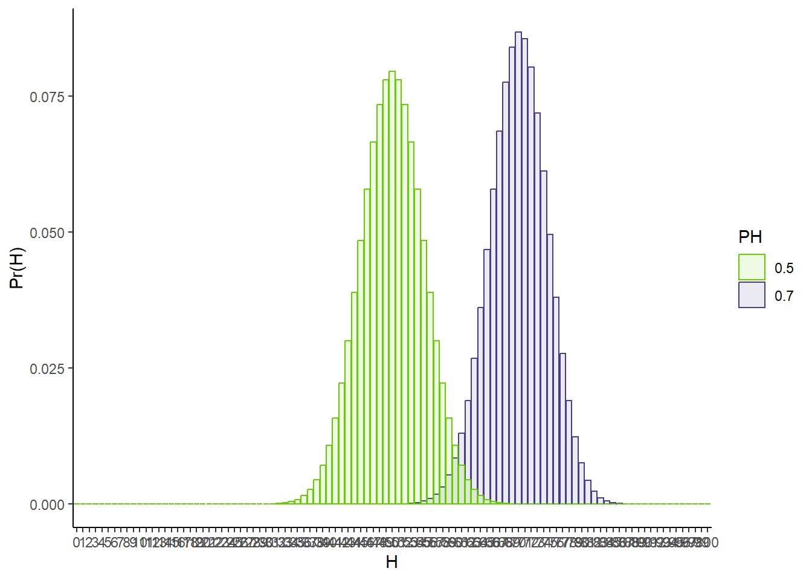

The last two chapters discussed how to model randomness in data. In this process, we can obtain parameter estimates that describe some aspect of the biological systems we study. Often, we have hypotheses about what parameter values we expected, or what certain parameter values tell us about our system of interest. How do we go from the output of a statistical model to “conclusions” regarding these hypotheses? One popular (albeit flawed) method for doing so is Null Hypothesis Statistical Testing (NHST) and is the topic of this chapter.
We are going to go through a collection of exercises that will help you discover the concept of NHST on your own. On this journey, you will also become acutely aware of the limitations of this method, and thus be better prepared to carefully interpret the output of an NHST analysis.
5.1 Does your data support your hypothesis?
All scientific endeavors can be boiled down to two steps:
Coming up with a hypothesis about how some aspect of the world works.
Collecting data to test said hypothesis.
Maybe you hypothesize that molecule X is a biomarker for a disease (i.e., its presence in an individual suggests that individual has the disease). You could measure the levels of molecule X in healthy and diseased patients to test your hypothesis. Maybe you hypothesize that transcript Y gets downregulated when you treat cells with drug Z. In any case, data that will provide evidence for or against said hypothesis needs to be collected.
There is a third step which at first may feel like a trivial extension of the second: analyzing your data and drawing a conclusion about your hypothesis. In practice though, this represents an immense challenge. You may have encountered an algorithm by which to solve this problem, known as null-hypothesis statistical testing. You may have been taught how to calculate p-values and how to draw conclusions from these p-values. Despite the ubiquitous algorithmization of this process, it has come under increased, heated scrutiny. Some have even accused it of launching a widespread reproducibility crisis plaguing the entire scientific enterprise, and have called for the death of this long extant practice.
What are these p-values and are they really that evil? To answer this question, we are going to explore the question that titles this section: “Does your data support your hypothesis?”. We are going to journey to the depths of this question to understand the challenges it poses and the ways we can go about tackling it. During this exploration, we will discover null-hypothesis significance testing (NHST). What we will find though, is that NHST is not the definitive solution to our quandery. It is a cheap hack that offers us an easy way out at the cost of falling short of our original goal. Despite the imperfections of its solution, it is not without merit though, and we will attempt to understand why it’s ok to give up sometimes.
5.2 The toy example: is this coin fair?
It’s always best to start simple and understand our problem in the context of a toy example. An almost cliche testing ground for hypothesis testing is determining whether or not a coin is fair. Despite being overused, it will serve us well. The scenario is that you are given a coin and asked, “is this coin fair?”. A fair coin is one that when flipped, has an equal probability of showing up heads or tails.
Take a second to stop and think about how you would try to answer this question.
Step 1 has to be to collect some data. How can we know if the coin is fair if we have never seen it flipped? The path towards answering any scientific question starts with data collection. As a part of this toy example, it will be useful to work with simulated data. The great thing about simulated data is that we know everything there is to know about how the data was created. We even know the answer to any question we could hope to ask about said data. In this case, we will “flip” a hypothetical coin 10 times and print the result. You can check out the code if you want to see what this simulation looks like. You can also check out the code if you want to see if this simulated coin is fair or not (how would you tell?):
5.2.0.1 Exercise 1: simulate 10 coin flips
Show the code
# Set seed to ensure consistent resultsset.seed(164)# Flip coins 10 timesflips <-rbinom(10, size =1, prob =0.5)# Convert to strings of heads (1s) and tails (0s):flips_HT <-ifelse(flips ==1, "H", "T")# Show resultscat("10 flips of the coin yielded: ", flips_HT, "\n")
10 flips of the coin yielded: H T H H H H T H H T
So in my simulation, I saw 7 heads and 3 tails.
Take some time to think about whether this is this strong evidence for or against fairness. How would you answer this question?
5.3 Assessing a coin’s fairness
We have now collected data about our coin. Step 2 is we need to find a way to analyze this data so as to assess whether or not our hypothesis of fairness is supported by the data. To help you arrive at an idea for how to do this, I will pose and discuss answers to a set of questions:
5.3.1 Can you definitively answer the question?
In other words, would it be possible to conclusively state “yes this coin is fair” or “no this coin is unfair” with complete certainty? Put another way, what would need to be true about flipping coins for this to be possible?
I would argue for this to be the case, we would need a certain kind of behavior from our coin. We would need the behavior of fair coins to always be distinct from that of unfair coins. For example, if fair coins always come up heads between 4 and 6 times when flipped 10 times, and a coin with any amount of unfairness always comes up head < 4 times (if it’s biased towards tails) or > 6 times (if it’s biased towards heads), then we’re set. If we see 4, 5, or 6 heads, we could automatically conclude that the coin is fair. If we see 1, 2, 3, 7, 8, 9, or 10 heads, we could automatically conclude that the coin is unfair. Any overlap in the possible outcomes of fair and unfair coins would mean that if faced with data in this realm of ambiguity, we would have no choice but to concede that we are not 100% certain that the coin is fair or unfair.
Your intuition is probably telling you that this would be absurd behavior for a coin to follow. What if a coin is only a little bit biased? Let’s say it comes up heads 51% of the time. How crazy would it be for a such a coin to come up heads 4, 5, or 6 out of 10 flips? And on the other side, would you really be that blown away if a fair coin came up heads 7 times?
Conclusion: We can only answer the fairness question probabilistically
That is to say, the best we can hope to do is to determine a probability that the hypothesis of fairness is true. This fact holds true for almost all scientific inquiries.
5.3.2 How can we describe the probability of a given outcome of our experiment?
We need to develop a statistical model for our data, like we discussed in the last unit. This means laying out assumptions for how our data is generated, and using those assumptions to figure out distributions that accuratley describe the variability in our data.
5.3.2.1 Exercise 2: What assumptions did you make in your simulations?
In our case, it would be reasonable to assume the following things about your data:
Each flip of the coin is independent. This means that the probability of seeing a heads on the next flip is unaffected by what you saw on any of your previous flips.
Every flip has the same probability of coming up heads. Let’s call this probability PH.
5.3.2.2 Exercise 3: What distribution do you expect such data to follow?
This process of independent trials with two possible outcomes feels a lot like a binomially distributed random variable. Thus, we can use the relevant proability mass function (dbinom()) to assign probabilites to various outcomes. For example, give me a value of PH and N, and I can tell you the probability of seeing any number of heads, H. Here’s what these probabilities look like for a fair coin flipped 10 times:
Show the code
library(ggplot2)library(dplyr)
Warning: package 'dplyr' was built under R version 4.3.2
Attaching package: 'dplyr'
The following objects are masked from 'package:stats':
filter, lag
The following objects are masked from 'package:base':
intersect, setdiff, setequal, union
Show the code
# Number of flipsN <-10# Probability of headsPH <-0.5# Number of headsHs <-0:N# P(H | N, PH)pofH <-round(dbinom(Hs, N, prob = PH),digits =3)tibble(pofH = pofH,H =factor(Hs)) %>%ggplot(aes(x = H, y = pofH)) +geom_bar(stat ='identity') +theme_classic() +xlab('H') +ylab('Pr(H)') +ggtitle(paste0("PH = ", PH)) +geom_text(aes(label = pofH, x = H, y = pofH), vjust =-0.6)

Are these probabilities surprising to you?
Some observations:
The most likely result for a fair coin is 50% heads and 50% tails.
The plot is symmetric about the 50/50 result. Seeing 6 heads is as likely as seeing 4 heads, seeing 7 heads is as likely as seeing 3 heads, etc.
All feasible results (0-10 flips) have some probability of occurring. This confirms our suspicion that definitively distinguishing fair and unfair coins is off the table.
While seeing 5 heads is the most likely outcome, it isn’t mind-blowingly more likely than seeing 4 or 6 heads. In fact, the probability of being 1 off of perfectly even (i.e., seeing 4 OR 6 heads) is more likely than seeing exactly 5 head. 4 and 6 heads each have probability of ~0.205, making the probability of one of these events occurring ~0.410. Compare that to the probability of 5 heads, ~0.246.
What does this plot look like for an unfair coin? Let’s set PH to 0.7 and see what happens:
Show the code
# Probability of headsPH <-0.7# P(H | N, PH)# More precision to prevent 0spofH <-round(dbinom(Hs, N, prob = PH),digits =5)tibble(pofH = pofH,H =factor(Hs)) %>%ggplot(aes(x = H, y = pofH)) +geom_bar(stat ='identity') +theme_classic() +xlab('H') +ylab('Pr(H)') +ggtitle(paste0("PH = ", PH)) +geom_text(aes(label = pofH, x = H, y = pofH), vjust =-0.6)

Compare and contrast that to the fair coin plot
To help with comparing, let’s overlap the two:
Show the code
# Probability of headsPH1 <-0.7PH2 <-0.5# P(H | N, PH)# More precision to prevent 0spofH1 <-dbinom(Hs, N, prob = PH1)pofH2 <-dbinom(Hs, N, prob = PH2)tibble(pofH =c(pofH1, pofH2),H =factor(c(Hs, Hs)),PH =factor(rep(c(PH1, PH2), each =11))) %>%ggplot(aes(x = H, y = pofH, fill = PH, color = PH)) +geom_bar(stat ='identity',position ='identity',alpha =0.1) +theme_classic() +scale_fill_manual(values =c('chartreuse3','darkslateblue')) +scale_color_manual(values =c('chartreuse3','darkslateblue')) +xlab('H') +ylab('Pr(H)')

Observations:
The most likely result is 7 heads and 3 tails. Do you notice a pattern? In short, its no coincidence that the most likely result equates to the product of N and PH. Try setting PH to something such that PH * N is not an exact integer. Guess what number of heads will be most likely and check your intuition.
The distribution is no longer symmetric. The probabilities seem to be bunching up due to there being a hard upper bound of “number of flips”.
5.3.3 How can we determine the probability of fairness?
With a probability function in hand, we can now begin tackling our main challenge: determining the probability our coin is fair.
5.3.3.1 Trying the easy thing
We want to know how likely our hypothesis of a fair coin is given the data we collected. We have at our disposal a probability function for our data. The easiest thing you could think to do is plug in our data and hypothesized value of PH into this formula and take the probability we get out as the probability our hypothesis is true. For 7 heads in 10 flips we get:
Show the code
# Show resultscat("Pr(7 H | PH = 0.5): ", round(dbinom(7, 10, 0.5), 3), "\n")
Pr(7 H | PH = 0.5): 0.117
This seems like a reasonable ballpark. 7 heads seems a bit weird for a fair coin, and we saw a string of 4 straight heads in our dataset, which is surprising. At the same time, 10 flips isn’t much, and so a couple extra heads isn’t crazy. An 11.7% chance that our hypothesis is correct kinda feels right.
Whenever we think we have an answer, its best to scrutinize it like a skeptic. What if we had flipped our coin a lot more times? Say we flipped it 100 times instead of 10. If we had gotten exactly 50 heads in this case, how confident should we be that our coin is fair? More or less than in our 7 heads in 10 flips result?
Intuitively, 50 heads in 100 flips is a lot better evidence in favor of fairness than 7 heads in 10 flips. It’s more data and exactly 50% heads, vs. 70% heads. So if we think our metric is accurately measuring the probability that our coin is fair, it should be higher in the 50/100 case. Let’s check and plug 50 heads in 100 flips to our probability function:
Show the code
# Show resultscat("Pr(50 H | PH = 0.5, N = 100): ", round(dbinom(50, 100, 0.5), 3), "\n")
Pr(50 H | PH = 0.5, N = 100): 0.08
Woah, that’s lower than the 7 heads in 10 flips case! How about if we got exactly 500 heads in 1000 flips
Show the code
# Show resultscat("Pr(509 H | PH = 0.5, N = 1000): ", round(dbinom(500, 1000, 0.5), 3), "\n")
Pr(509 H | PH = 0.5, N = 1000): 0.025
It’s even lower!! That’s evidence that our strategy is missing something. What’s going on?
It might be helpful to go back to our full probability function. What does it look like for a fair coin vs one possible unfair coin, each flipped 100 times?
Show the code
# Probability of headsPH1 <-0.7PH2 <-0.5# P(H | N, PH)# More precision to prevent 0spofH1 <-dbinom(0:100, 100, prob = PH1)pofH2 <-dbinom(0:100, 100, prob = PH2)tibble(pofH =c(pofH1, pofH2),H =factor(c(0:100, 0:100)),PH =factor(rep(c(PH1, PH2), each =101))) %>%ggplot(aes(x = H, y = pofH, fill = PH, color = PH)) +geom_bar(stat ='identity',position ='identity',alpha =0.1) +theme_classic() +scale_fill_manual(values =c('chartreuse3','darkslateblue')) +scale_color_manual(values =c('chartreuse3','darkslateblue')) +xlab('H') +ylab('Pr(H)')

As we saw before, 50 heads and 50 tails is the most likely outcome for a fair coin. The problem though is that the more we flip the coin, the more possible outcomes there are. With 100 flips, everything from 40-60 heads is pretty commonly seen with a fair coin. Thus, the probability of any one of these events gets smaller and smaller with more flips.
5.3.3.2 Why your coin isn’t fair
Our first attempt forces us to reckon with something about our question of “what is the probability that our coin is fair”. We have built a model for coin flipping and decided that a fair coin is one for which a parameter in this model (PH) takes on a precise value (0.5). Does it make sense to ask such an exact question though? Can PH ever be expected to be exactly 0.5 for any coin?
The point I am hinting at here is a subtlety of probability theory that trips many students up. The probability of heads for our coin should be thought of as a continuous random variable. It can take on any value between 0 and 1 on the real number line. When discussing such random variables, it doesn’t make much sense to talk about the probability of any particular value. I’ll point you to a great 3blue1brown YouTube video for more context (https://www.youtube.com/watch?v=ZA4JkHKZM50), but in short, when there are an infinite number of things that could happen (more precisely an uncountably infinite), the probability of any particular outcome is exactly 0. Thus, we can only talk about the probability that our outcome falls within a range of outcomes (e.g., heads probability between 0.45 and 0.55).
Therefore, your coin isn’t fair. The probability that it is exactly fair is exactly 0. One way to navigate this challenge is to change the problem specification a bit. Instead of asking whether or not the coin is exactly fair, we need to consider a range of heads probabilities. If we have reason to believe that our coin’s probability of coming up heads falls outside of this range, then we’ll say the coin is unfair. Otherwise, we will call it fair.
5.3.3.3 Idea #2: Integrating the likelihood function
If it’s a range of values we need to consider, why not just sum of the value for idea #1 for a range of potential PHs? We could then look at this probability as a function of the range of PHs we choose and come to decisions about coin fairness from that.
### Parameters to set# Number of headsH <-7# Number of flipsN <-10# Lower bound on PH range to considerlower_bound <-0.45# Upper bound on PH range to considerupper_bound <-0.55# Integration rectangle widthdPH <-0.00001### Calculatecalc_integral <-function(H =5, N =10, lower_bound =0.45, upper_bound =0.55,dPH =0.00001){ PHstosum <-seq(from = lower_bound, to = upper_bound,by = dPH) output <-0for(p inseq_along(PHstosum)){ output <- output +dbinom(H, N, PHstosum[p])*dPH }return(output)}outcome <-calc_integral(H=H, N=N, lower_bound=lower_bound,upper_bound=upper_bound, dPH=dPH)cat("Result is: ", round(outcome, 3), "\n")
Result is: 0.012
5.3.3.4 Considering prior experiences/knowledge
5.3.3.5 Why the true answer is tough
5.3.3.6 The easy way out: NHST and p-values
5.3.3.7 p-values vs the actual solution
5.3.3.8 Can you just plug and chug? Why Pr(data | PH = 0.5) ain’t it
An intuition for what went wrong
5.3.3.9 Considering all possible hypotheses
Despite the flaws of Pr(H | PH = 0.5), it is on the right track. Look again at the comparison of 10 and 100 flips of a fair and 70% heads coin (figures X and Y). Focus your attention on the 50/50 bar (5 heads out of 10 or 50 heads out of 100). Compare the heights of this bar for the fair and unfair coin. What is the impact of more flips?
While the absolute height of the bar for the fair coin does not tell us how likely our coin is to be fair, the relative bar heights for the fair and unfair coins seem to trend in the right direction. We are a little less than half as likely to see 5 heads in 10 flips with the 70% heads biased coin as we are with the fair coin. In 100 flips though, seeing 50 heads is WAY more likely with a fair coin than with the 70% heads coin.
Conclusion: P(H | PH = 0.5) does not matter on its own, what matters is its size relative to all other possible hypotheses.
That’s to say, we need to calculate:
\[
\frac{\text{P(H | PH = 0.5)}}{\int_{0}^{1} \text{P(H | PH = x)}\,dx}
\] Integrals can be a bit of a pain in the butt to calculate. That’s part of what will motivate us to look for an easier way out. For now though, let’s see what various outcomes for 10 flips yields for this new quantity:
Show the code
# Step sizedph <-0.001# phs to calculate value at for numerical integrationPH_grid <-seq(from = dph/2, to =1- dph/2, by = dph)subgrid <- PH_grid[PH_grid >0.45& PH_grid <0.55]Hs <-0:10PofFair <-rep(0, times =length(Hs))for(h inseq_along(Hs)){ num <-sum(dbinom(Hs[h], size =10, prob = subgrid)*dph) denom <-sum(dbinom(Hs[h], size =10, prob = PH_grid)*dph) PofFair[h] <- num/denom}tibble(PofFair = PofFair,H =factor(Hs)) %>%ggplot(aes(x = H, y = PofFair)) +geom_bar(stat ="identity") +theme_classic() +xlab("H") +ylab("Fairness probability (2nd try)")